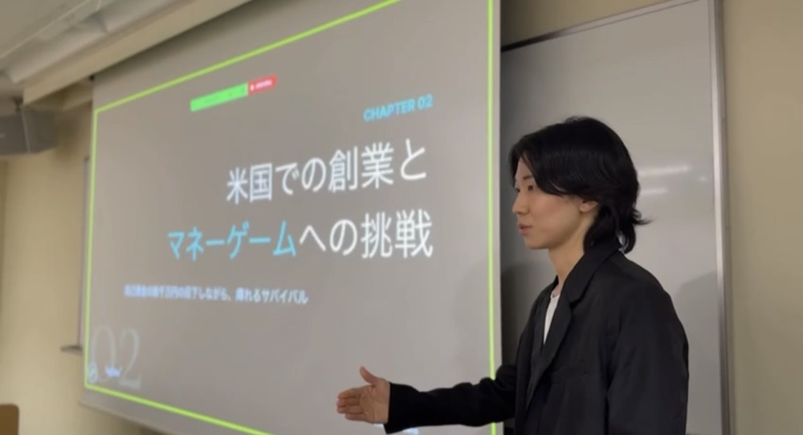
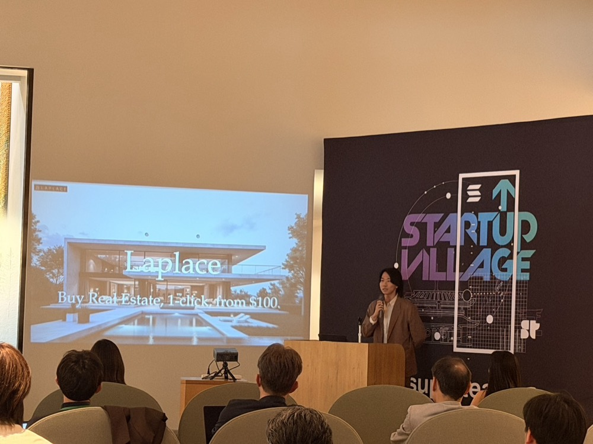
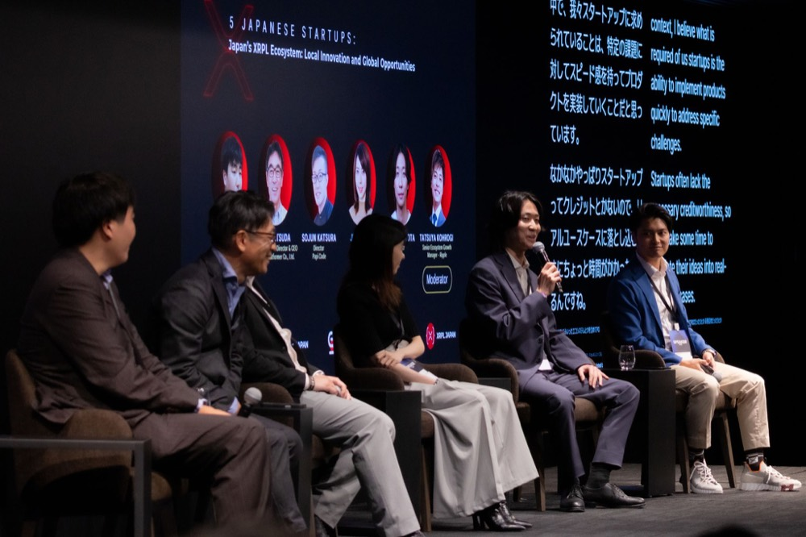
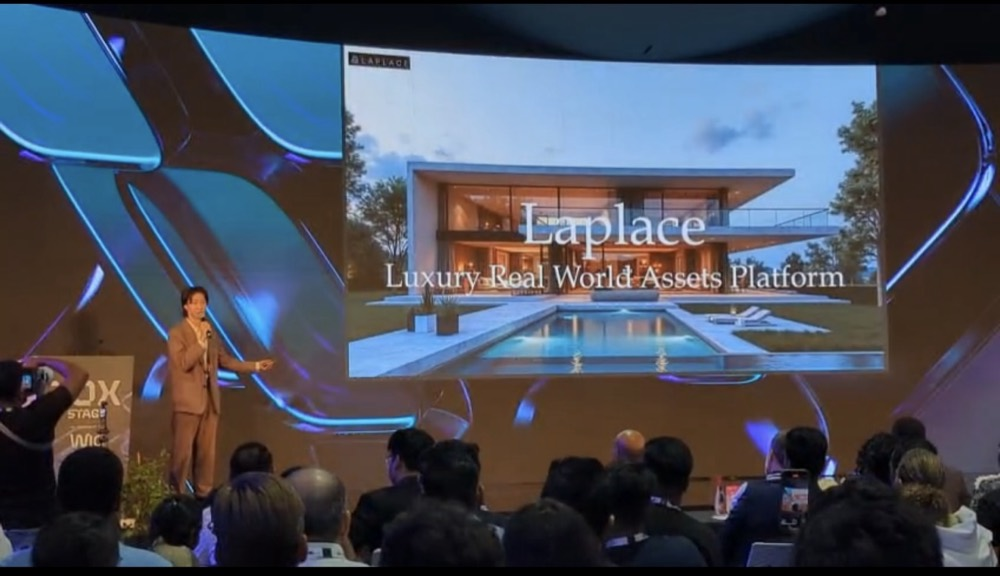
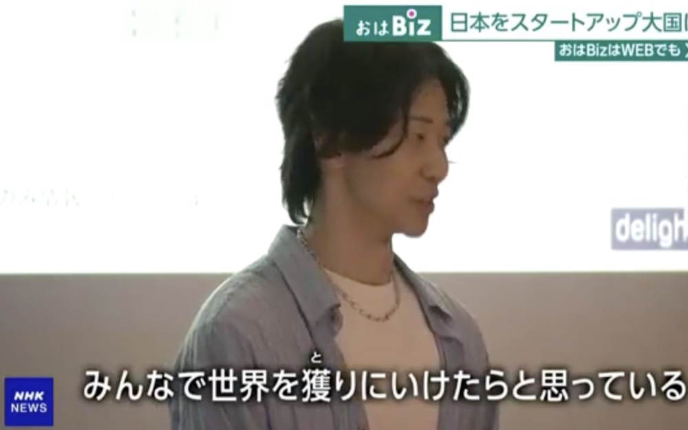

2026.07.15
登壇
東京大学ブロックチェーンイノベーション寄附講座にて講師として登壇

Laplace代表・廣田裕介が、東京大学のブロックチェーンイノベーション寄附講座にて、スタートアップ論および不動産RWAのユースケースをテーマに講師として登壇しました。実務家の視点から、日本におけるRWA分野の可能性と課題について講義を行いました。

Laplace代表・廣田裕介が、東京大学のブロックチェーンイノベーション寄附講座にて、スタートアップ論および不動産RWAのユースケースをテーマに講師として登壇しました。実務家の視点から、日本におけるRWA分野の可能性と課題について講義を行いました。
Laplaceは、株式会社UK信託と、海外不動産の日本展開(信託受益権およびセキュリティトークンプロジェクト)における戦略的パートナーシップを締結しました。日本の信託法に基づく信託基盤の構築と、ブロックチェーンを活用した信託業務の技術開発を通じ、海外不動産の小口投資を日本国内で実現する基盤づくりを進めています。
本人開示情報に基づく(UK信託公式 uktrust.jp)

Laplaceは、Superteam Japanが日本限定で開催した「Frontier Hackathon Side Track」(Solana Foundation・Colosseumが主催するグローバルハッカソン「Frontier」の日本向け特別トラック)において、全30件の応募の中から2位を受賞し、賞金2,500 USDGを獲得しました。
Laplaceは、Christie's International Real Estate Dubaiと、UAEにおける不動産トークン化プロジェクトに関する戦略的パートナーシップ(MOU)を締結しました。契約規模は$400M。ドバイの正規不動産ネットワークを通じたソーシング基盤の確立により、Laplaceのクロスボーダー不動産RWA事業における中核提携となります。
本人開示情報に基づく(Christie's Dubai公式 christiesrealestatedubai.com)

Laplace代表・廣田裕介が、TEAMZ SUMMIT 2026の特別プログラムとして八芳園にて開催された「XRP Tokyo 2026」にて、パネルセッション「Japan's XRPL Ecosystem: Local Innovation and Global Opportunities」に登壇しました。共演者はNexbridge共同創業者Jean Zhu氏、Digital Platformer代表松田一慶氏、SuzuPay創業者Ai Kosuke氏、Papi Code取締役Sojun Katsura氏、モデレーターはRippleのTatsuya Kohrogi氏。日本のXRPLエコシステムにおけるローカルイノベーションとグローバルな事業機会について議論しました。
Laplaceは、JETROとRipple Labsが主催する「日本金融インフライノベーションプログラム(JFIIP)」において、最優秀賞(Grand Prize)を受賞し、賞金総額3万米ドルのうち1万米ドル(当時レートで約155万円)を獲得しました。本プログラムは、XRP Ledger等のブロックチェーン上でエンタープライズグレードの規制準拠型デジタル金融ソリューションを開発するスタートアップを支援する、ベンチャースタジオ主導の国家規模アクセラレーションイニシアチブです。デモデイはJapan Fintech Week 2026期間中の2026年2月24日にジェトロ東京で開催され、政策立案者・金融機関・投資家が参集しました。

Laplaceは、ドバイで開催された「GITEX Global」のスタートアップピッチコンテスト「Supernova Challenge」において、1,000社以上の応募の中からTOP10ファイナリストに選出されました。この経験を通じ、代表・廣田裕介はChristie's International Real EstateやSheng Tai Internationalとの提携につながる、UAE・東南アジア市場における事業拡大の足がかりを得ました。世界水準の審査員・パートナー企業とのネットワーキングの場となったExpand North Starは、その後もLaplaceの主要な事業拡大チャネルとなっています。
Laplaceは、JETROおよびElixir Capitalが主催する「J-StarX」の一環として、アブダビの政府系イノベーション拠点Hub71が実施するWeb3スタートアップ向けイマージョンプログラムの第3フェーズに、選出された国内7社の1社として参加しました。参加企業はLaplaceのほか、Curvegrid、Kyuzan、Creatant、MIKI、XENEA、Aniarkの計7社。東京での事前プログラムを経て、Hub71のアブダビ本拠地とGITEX Expand North Starでの2週間の現地プログラムに参加し、現地投資家との接点構築、パイロット機会の探索、GITEXジャパンパビリオンでの技術展示を行いました。Hub71のStartup Journey Lead、Divya Nair氏は、日本の起業家がアブダビの開かれたビジネス環境を体験することの意義を強調しています。
Laplaceは、マレーシアの不動産事業者Sheng Tai Internationalと、同国における不動産トークン化プロジェクトに関する戦略的パートナーシップ(MOU)を締結しました。契約規模は$500M。東南アジア展開における最初の大型提携です。
本人開示情報に基づく

Laplace代表・廣田裕介が、DeNA系列のベンチャーキャピタル、デライト・ベンチャーズが運営するAI特化の海外起業家育成プログラム「DelightX」の1期生に選出されました。米国サンフランシスコ・ベイエリアに滞在し、現地の起業家・投資家陣から直接メンタリングを受けるプログラムで、参加者には最大6万米ドルの支援も提供されます。この挑戦の様子はNHKにも取材されました。
デライト・ベンチャーズ公式、X投稿(DeNA PR)
Laplace(創業当時の社名:株式会社Neuron X)は、日本貿易振興機構(JETRO)と500 Globalが共同運営するグローバル展開支援プログラム「J-StarX Silicon Valley Extended Program」に採択されました。東京での集中プログラムとシリコンバレーでの現地プログラムの2フェーズ構成で、グローバルVCへのピッチ力とGo-to-Market戦略を学ぶ機会となりました。
Laplace(創業当時の社名:株式会社Neuron X)は、中小企業庁が実施する「ものづくり・商業・サービス生産性向上促進補助金(第18次公募)」に採択されたことをお知らせいたします。本補助金は、国内中小企業・スタートアップの技術開発および生産性向上を支援する国の主要な制度であり、創業初期の技術基盤構築を後押ししました。
neuron-x.co.jp(2024-07-01投稿、2024-09-18最終更新)